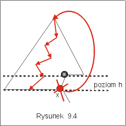
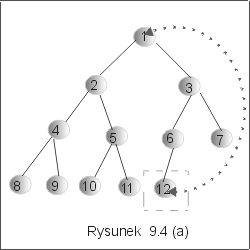
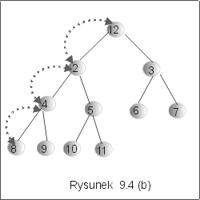
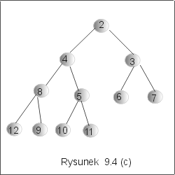

| « poprzedni punkt | nastêpny punkt » |
Element minimalny, ze wzglêdu na porz±dek w zbiorze etykiet, znajduje siê w korzeniu kopca. Znalezienie elementu minimalnego nie przedstawia wiêc ¿adnego problemu. Je¶li kopiec jest reprezentowany przez korzeñ drzewa binarnego root typu node (por. wyk³ad VI p4.), to aby poznaæ warto¶æ elementu minimalnego kopca, wystarczy sprawdziæ warto¶æ atrybutu root.val.
Et min(root : node){ return root.val;}.
Uzasadnienie, ¿e operacja min zwraca najmniejsz± z etykiet przechowywanych w kopcu pozostawiamy Czytelnikowi.
Operacj±, której po¶wiêcimy wiêcej uwagi w tym punkcie, bêdzie operacja usuwania minimum, delmin,
delmin : Heap ® Heap,
polegaj±ca na usuniêciu z kopca elementu najmniejszego. Ma ona nastêpuj±c± specyfikacjê: dla dowolnego H Î Heap i dowolnego e Î Et,
min(H) = e ® (min (delmin(H)) > e Ù Ø member(e, delmin(H))).
Oczywi¶cie, po wykonaniu tej operacji, powinni¶my otrzymaæ równie¿ kopiec. Usuniêcie elementu minimalnego chcemy wykonaæ tak, by w jak najmniejszym stopniu modyfikowaæ strukturê drzewa doskona³ego. Nie mo¿emy wiêc po prostu usun±æ wierzcho³ka znajduj±cego siê w korzeniu drzewa.
Metoda
Niech x bêdzie li¶ciem znajduj±cym siê najbardziej na prawo na ostatnim poziomie kopca H, tak jak zaznaczono na rysunku 9.4. Postêpowanie sk³ada siê z trzech kroków:
|
 |
Przyk³ad 3.1
Rozwa¿my drzewo z rysunku 9.2(a). Prze¶led¼my proces usuwania etykiety korzenia tego drzewa. Kolejne fazy algorytmu s± zilustrowane na rysunkach 9.4(a), (b), (c). W pierwszym kroku zapamiêtamy etykietê li¶cia (na rysunku 9.4(a) zaznaczony wierzcho³ek z etykiet± 12) znajduj±cego siê na ostatnim poziomie drzewa, najbardziej na prawo, i umie¶cimy j± w korzeniu drzewa (usuwaj±c w ten sposób etykietê 1). Otrzymane drzewo jest doskona³e, nie jest jednak czê¶ciowo uporz±dkowane. Uporz±dkowanie poprawimy, zamieniaj±c etykietê wierzcho³ka z mniejszym z jego synów, tak jak zaznaczono na rysunku 9.4(b), i kontynuuj±c ten proces w górê drzewa tak d³ugo, a¿ otrzymamy drzewo czê¶ciowo uporz±dkowane. Wynik przedstawiono na rysunku 9.4(c).
|  |  |  |
Koszt algorytmu delmin
Kroki 1 i 2 algorytmu maj± sta³y koszt. W ka¿dym kroku pêtli 3, algorytm wykonuje co najwy¿ej dwa porównania (wybór najmniejszego z trzech elementów). Liczba iteracji jest równa d³ugo¶ci przebytej ¶cie¿ki, a ta w najgorszym przypadku jest równa wysoko¶ci drzewa. Koszt ca³kowity wykonania operacji delmin mo¿emy wiêc szacowaæ z góry przez O(lg n).
Uwaga. Podobnie, jak w przypadku wstawiania, usuwanie minimum z drzewa-kopca sprawia trochê problemów. Chodzi o znalezienie ostatniego li¶cia, tego, którego etykieta wêdruje na miejsce usuwanego minimum. Znów, jak w przypadku wstawiania, jedna referencja nie wystarczy, bo po usuniêciu jednego elementu, trzeba bêdzie j± uaktualniæ (umieæ znów znale¼æ ostatni li¶æ). Zatem, by³oby najlepiej mieæ referencje do "s±siada" z lewej w ka¿dym wierzcho³ku. Ponadto potrzebne s± referencje do wierzcho³ka-ojca. Wszystko to wymaga dodatkowej pamiêci rzêdu liczby przechowywanych elementów. Inn±, bardziej oszczêdn±, implementacjê tego algorytmu poznamy w punkcie czwartym wyk³adu.
Pytanie 3: Czy koszt algorytmu delmin, zastosowanego do kopca o 2k wierzcho³kach, mo¿na oszacowaæ z góry przez 2*k ?
| « poprzedni punkt | nastêpny punkt » |